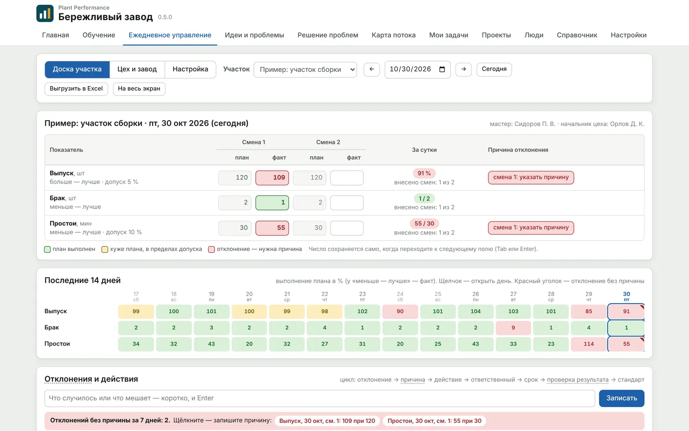
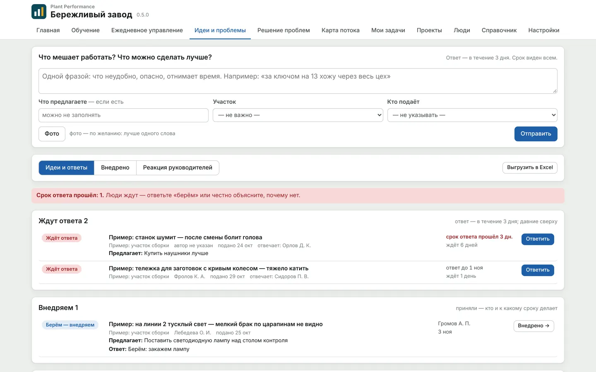
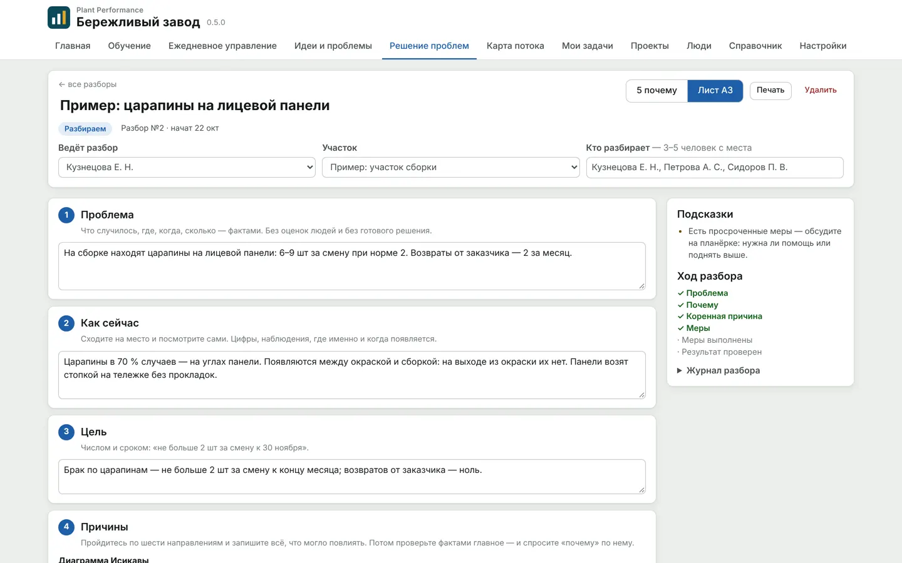
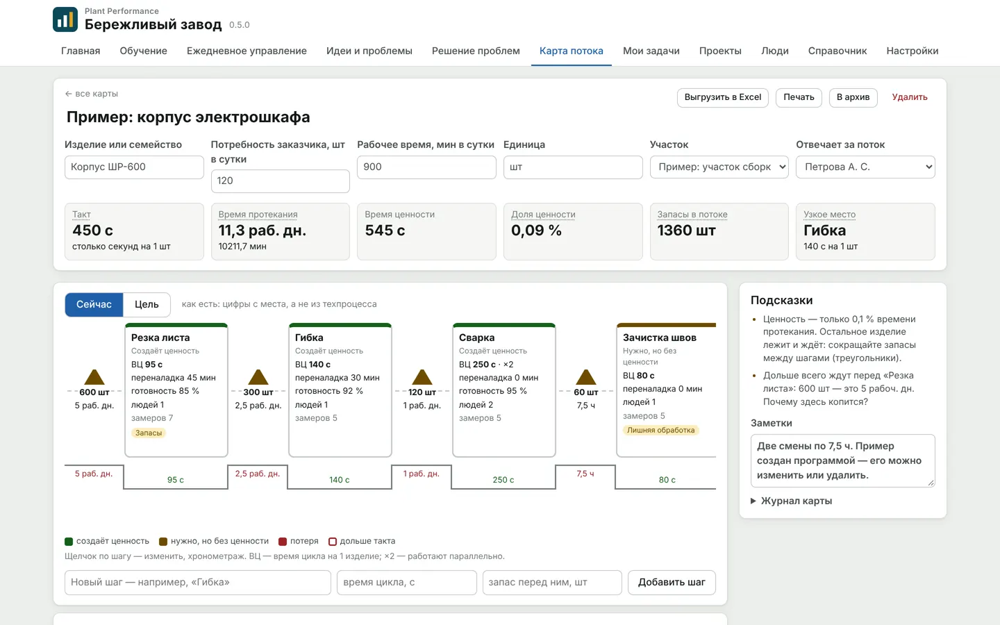
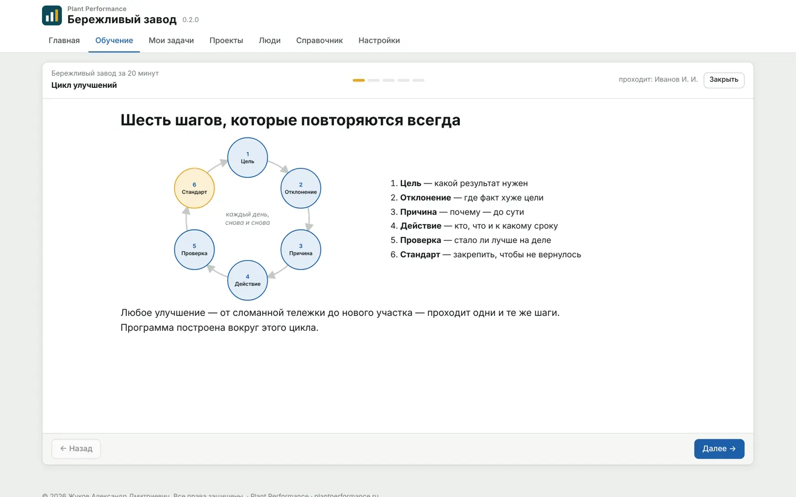
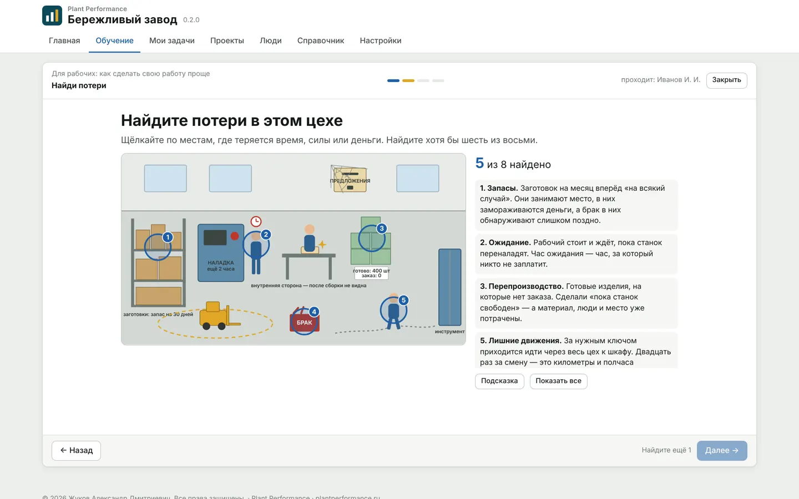
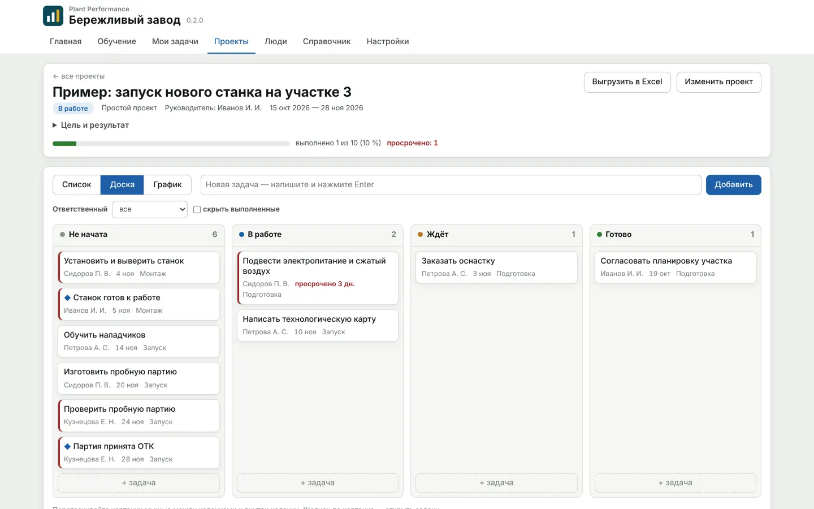
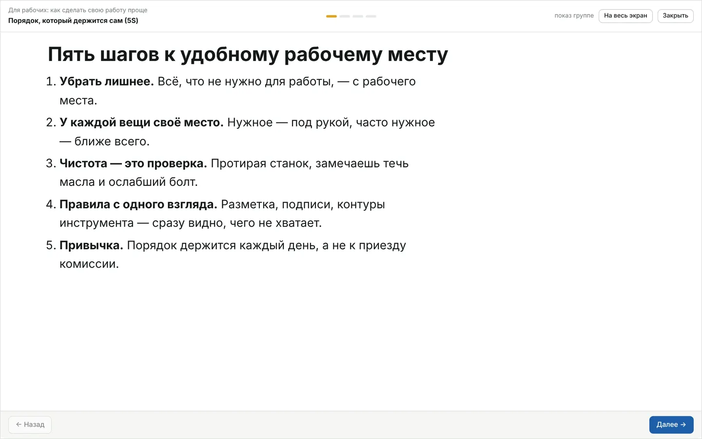

Plant Performance / Бережливый завод
Бережливое производство · новинка
Бережливый заводпрограмма для бережливого производства: ежедневные улучшения, которые доводятся до результата
Бережливое производство часто живёт «для галочки»: стенды не обновляются месяцами, идеи рабочих остаются без ответа, порядок наводят к приезду комиссии. Программа превращает улучшения в ежедневную работу: каждое проходит путь от проблемы до стандарта, а люди видят, что их предложения доходят до результата.
Новая программа линейки Plant Performance. Windows, ставится на компьютер предприятия, интернет не нужен. Модули включаются по мере готовности завода.
Улучшения каждый день — понятно всем
Программа не заменяет людей и не «внедряет бережливое производство» за завод. Она держит дисциплину цикла: ни одно отклонение и ни одна идея не теряются, у каждого действия есть ответственный и срок, а засчитывается только то, что подтверждено замером.
- Ответ на каждую идею — в срок, и это видно всем
- Результат на виду: «было / стало»
- Спасибо за найденную проблему, а не наказание
- Обучение, которое понятно рабочему
Один цикл для каждого улучшения
Цель → отклонение → причина → действие → проверка результата → стандарт. Каждый экран программы — шаг этого цикла, и программа не даёт остановиться на полпути.
- 1Цельплан смены, допуск
- 2Отклонениевидно на доске участка
- 3Причина5 почему, Исикава
- 4Действиеответственный и срок
- 5Проверкапомогло или нет — по замеру
- 6Стандарткак работать теперь
Перенос срока — только с причиной. Не решили на участке — вопрос поднимается в цех, затем на завод.
Шесть модулей бережливого производства
Включаются по необходимости: можно начать с обучения и одной доски участка. Выключенное в программе не видно.
- ОбучениеКурс «Бережливый завод за 20 минут» для всех и короткие уроки для рабочих: вопросы с объяснением «почему так», упражнение «Найдите потери в цехе», урок крупно на экране для пятиминутки. Видно, кто что прошёл.
- Ежедневное управлениеДоска участка: план и факт по сменам, отклонение без причины не остаётся. Причина → действие → ответственный → срок → проверка «помогло или нет». Не решили на участке — вопрос поднимается в цех и на завод.
- Идеи и проблемы от людей«Что мешает?» — фраза и фото. Срок ответа виден всем; «не берём» — только с объяснением; внедрённое — только с «было / стало» и благодарностью. Директор видит, как быстро отвечают руководители.
- Решение проблем«5 почему» и лист A3 с диаграммой Исикавы: коренная причина, меры, проверка, где ещё применить. Открывается одной кнопкой из отклонения или идеи; закрыть можно только с результатом.
- Мероприятия и проектыЗадачи, ответственные и сроки: список, доска с карточками и график. Просрочки видны сразу, у каждого — свои «Мои задачи».
- Картирование потокаКарта потока «сейчас» и «цель»: такт, время протекания, доля ценности, узкое место, хронометраж и замеры «было → стало → цель». Улучшения уходят в задачи с ответственным.








Вовлечение, а не галочки
Люди перестают подавать идеи, когда не видят ответа. Поэтому программа считает не «сколько предложений подали», а как быстро и чем на них ответили.
- Директор видит реакцию руководителей: идеи без ответа и дни ожидания
- Нормы «N предложений в месяц» по умолчанию выключены
- Признание вместо рейтингов: лента внедрённого и «спасибо» автору
- Результат — человеческим языком: «было / стало», а не проценты ради процентов
- Если «5 почему» сводится к поиску виноватого, программа подскажет вернуться к процессу
Вместе с «Заводом в цифрах»
«Завод в цифрах» показывает, где завод отстаёт от цели по деньгам, выпуску и качеству. «Бережливый завод» — как люди на участках каждый день это исправляют. Каждая программа работает и сама по себе.
В плане развития
Стандарты и 5S: аудиты с фото в случайное время, стандартная работа.
Самодиагностика зрелости
«Паутинка» по направлениям бережливого производства и готовый план, с чего начать.
ИИ-наставник
Помогает разбирать проблему вопросами, а не готовыми ответами.
Три пункта выше — в разработке.
Кому подходит
Заводу, где бережливое производство уже пробовали и оно «не прижилось», — или где его только начинают и хотят сразу делать по-настоящему.
Директор завода
Видно, какие проблемы решаются, а какие лежат; как быстро руководители отвечают людям.
Руководитель производственной системы
Обучение, доски участков, разборы A3 и карты потока — в одном месте, без папок и стендов.
Мастера и бригадиры
Пятиминутка по экрану, понятные уроки для смены, «Мои задачи» со сроками.
Частые вопросы
Нужен ли консультант по бережливому производству?
Нет. В программе есть курс «Бережливый завод за 20 минут», короткие уроки для рабочих и подсказки на каждом шаге разбора проблемы. Программа ведёт по циклу сама: цель, отклонение, причина, действие, проверка, стандарт.
Подойдёт, если бережливого производства на заводе ещё нет?
Да. Начать можно с обучения и одной доски участка: показатели смены, отклонения и действия по ним. Остальные модули включаются, когда до них дойдёте, — выключенное в программе не видно.
Чем это лучше стенда и таблицы в Excel?
Стенд не напомнит о сроке и не покажет, что идея месяц лежит без ответа. В программе у каждого отклонения и каждой идеи есть ответственный и срок, перенос срока — только с причиной, а улучшение засчитывается только после проверки результата.
Где хранятся данные?
На компьютере предприятия. Программа для Windows, интернет и облако для работы не нужны.
Сколько стоит?
Показ — бесплатно. Пилот на 30 дней — от 50 000 ₽, при покупке лицензии засчитывается в её стоимость. Стоимость лицензии назовём после пилота, когда понятен объём.
Ещё от Plant Performance
Скачать
Презентация, ролики, бесплатные образцы и шесть документов из комплектов — без регистрации.
Программы
Презентация и ролики
Скачать презентацию · PDF- Ролик «Завод в цифрах»MP4 · 0:50 · титры на экране
- Ролик «Бережливый завод»MP4 · 1:20 · титры на экране
- ИИ-ассистент: P&L и рискиMP4 · 0:51 · условные данные
- ИИ-ассистент: отчёт для директораMP4 · 1:33 · условные данные
Бесплатно для работы
Образцы для завода · 8
Простые формы, чтобы начать. Полные версии пришлём по запросу. Все образцы →
Файлы · 8
- Таблица план-факт по сменамExcel · как вести план-факт
- Протокол производственного совещанияWord · как провести за 15 минут
- Журнал учёта простоев оборудованияExcel · как считать простой
- График ППР оборудованияExcel · как составить
- Журнал входного контроляExcel · как заполнять
- Учёт и поверка СИExcel · график поверки
- Управленческая отчётностьExcel · сводка и KPI
- Экспресс-аудит заводаExcel · 30 вопросов
Документы
Завод ЖБИ
Файлы · 3
- Технологическая карта ТК-ТВО-01Тепловлажностная обработка в камерах · PDF, 5 страниц
- Инструкция ОТК ИК-ОК-03Контроль прочности бетона · PDF
- Чек-листы операторов на сменуФормы для печати A4 · PDF
Документы
Завод водонагревателей
Файлы · 3
- Технологическая карта ТК-ЭМ-02Обжиг эмали · PDF, 5 страниц
- Инструкция ОТК ИК-ОК-03Контроль эмалевого покрытия · PDF
- Доски участковПлан и факт по часам, формы A3 · PDF
Напишите нам
Расскажите в двух строках, что за завод и что хотите посмотреть или автоматизировать. Ответим, покажем программу в работе и пришлём документы, которых нет на сайте.